Meteorización: procesos, perfiles y geoformas#
Este documento presenta los conceptos fundamentales de la meteorización abarcando desde los procesos físico-químicos hasta la clasificación de perfiles para ingeniería.
Important
Objetivos de aprendizaje:
Comprender la meteorización como un proceso de desequilibrio termodinámico entre las rocas y la superficie.
Identificar los procesos físicos, químicos y biológicos que transforman el macizo rocoso.
Analizar la formación de perfiles de meteorización en ambientes tropicales y su importancia en ingeniería (saprolito, laterita).
Relacionar la meteorización de silicatos con el ciclo global del carbono y la regulación del clima.
La meteorización es la alteración in situ de las rocas y minerales en la superficie de la Tierra (o cerca de ella) en respuesta a las condiciones físicas, químicas y biológicas. De acuerdo con Anon [1995], es la desintegración (física) y descomposición (química) de la roca en su lugar de origen, sin un transporte significativo del material resultante. La susceptibilidad de la roca a procesos de meteorización química es función de la mineralogía, textura y presencia de fracturas, aumentando con el tamaño del grano, el incremento de la porosidad y la permeabilidad; sin embargo, el control dominante en el modo de meteorización es la lluvia y la temperatura, al igual que el rápido cambio de dichas variables durante el día [Ollier, 1984]. Es por esto que masas rocosas en ambientes tropicales húmedos se caracterizan por la generación de profundos perfiles de meteorización.
La causa fundamental es el desequilibrio termodinámico. Las rocas, especialmente las ígneas y metamórficas, se forman a altas temperaturas y presiones en el interior de la Tierra, donde son estables. Cuando el levantamiento tectónico y la erosión las exponen en la superficie, se encuentran en un ambiente radicalmente diferente (baja T°, baja P°, alta O₂, alta H₂O). En estas nuevas condiciones, sus minerales constituyentes son inestables y reaccionan químicamente para alcanzar un nuevo estado de equilibrio, transformándose en minerales más estables en la superficie (como las arcillas).
{kind=link}
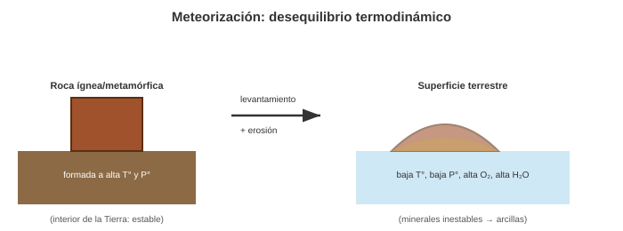
Fig. 48 La meteorización como respuesta al desequilibrio termodinámico entre las condiciones de formación de la roca y las de la superficie. Elaboración propia.#
El Ciclo del Carbono y la Meteorización de Silicatos#
La relación entre el CO₂, la meteorización y el cambio climático es un sistema de retroalimentación geológica a largo plazo, fundamental para la regulación del clima de la Tierra a lo largo de millones de años. Se centra en el ciclo del carbono, donde la meteorización de silicatos actúa como un sumidero de CO₂ atmosférico.
El ciclo geológico del carbono opera en escalas de tiempo de cientos de miles a millones de años y es el principal mecanismo de control del CO₂ atmosférico y, por lo tanto, de la temperatura global en estas escalas. La meteorización de rocas de silicato es el componente clave que extrae CO₂ de la atmósfera.
Captura de CO₂: El dióxido de carbono (CO₂) de la atmósfera se disuelve en el agua de lluvia para formar ácido carbónico (H₂CO₃), una reacción que se puede simplificar como:
\(CO₂ + H₂O \leftrightarrow H₂CO₃\).
Meteorización Química: Este ácido carbónico ataca y disuelve los minerales de silicato, un proceso conocido como hidrólisis. Un ejemplo clásico es la meteorización del feldespato potásico (silicato):
\(2KAlSi₃O₈ + 2H₂CO₃ + 9H₂O \rightarrow Al₂Si₂O₅(OH)₄ + 2K⁺ + 2HCO₃⁻ + 4H₄SiO₄\)
(Feldespato + Ácido carbónico + Agua \(\rightarrow\) Arcilla + Iones de potasio + Bicarbonato + Ácido silícico)
Durante esta reacción, dos moléculas de ácido carbónico (y por lo tanto, dos moléculas de CO₂) se consumen por cada molécula de feldespato que se altera. Los iones resultantes, como el bicarbonato (\(HCO₃⁻\)) y los cationes (\(K⁺, Ca²⁺, Mg²⁺\)), son transportados por los ríos al océano.
Formación de Carbonatos: En el océano, los organismos marinos utilizan los iones de calcio (\(Ca²⁺\)) y bicarbonato (\(HCO₃⁻\)) para construir sus esqueletos y conchas de carbonato de calcio (\(CaCO₃\)), por ejemplo:
\(Ca²⁺ + 2HCO₃⁻ \rightarrow CaCO₃ + CO₂ + H₂O\)
(Iones de calcio + Bicarbonato \(\rightarrow\) Carbonato de calcio + Dióxido de carbono + Agua)
Aunque esta reacción libera CO₂ nuevamente, la cantidad neta de CO₂ que se fija en los sedimentos de carbonato en el fondo oceánico es significativa y equilibra el CO₂ atmosférico. Con el tiempo, estos sedimentos se litifican para formar rocas calizas, un almacén a largo plazo para el carbono.
Esta serie de reacciones constituye la “bomba de calor” geológica, ya que regula la temperatura del planeta: si las temperaturas globales aumentan, se acelera la meteorización, extrayendo más CO₂ de la atmósfera, lo que a su vez causa un enfriamiento y estabiliza el clima. A la inversa, si el clima se enfría, la tasa de meteorización disminuye, permitiendo que el CO₂ de las fuentes volcánicas se acumule y cause un calentamiento.
Retroalimentación entre Cambio Climático y Meteorización#
El cambio climático causado por las emisiones antropogénicas de CO₂ altera este delicado equilibrio.
Retroalimentación Negativa (Estabilizadora): Un aumento en la temperatura global y la precipitación (dos efectos del cambio climático) acelera la meteorización química. Una atmósfera más caliente y húmeda incrementa la tasa de hidrólisis y la disolución de minerales, lo que conduce a una mayor absorción de CO₂. Teóricamente, esto podría actuar como un “freno” al calentamiento. Sin embargo, este proceso es extremadamente lento, operando en escalas de tiempo de decenas de miles a cientos de miles de años, por lo que no puede contrarrestar el rápido aumento de CO₂ causado por las actividades humanas.
Retroalimentación Positiva (Desestabilizadora): Por otro lado, la liberación de carbono de reservorios geológicos, como el deshielo del permafrost, crea una retroalimentación positiva. El aumento de las temperaturas derrite el permafrost, liberando grandes cantidades de materia orgánica que al descomponerse generan CO₂ y metano (\(CH₄\)). Este gas adicional contribuye al calentamiento, lo que a su vez acelera aún más el deshielo y la liberación de gases de efecto invernadero.
En resumen, la meteorización de silicatos es un regulador fundamental del clima, pero su lentitud hace que sea ineficaz para mitigar el rápido cambio climático actual. Comprender la velocidad y los umbrales de este proceso es crucial para modelar las consecuencias a largo plazo del calentamiento global.
Factores#
El clima es el motor de la meteorización.
Temperatura: Controla la tasa de las reacciones químicas (la regla de van’t Hoff sugiere que la tasa se duplica por cada 10°C de aumento). También habilita procesos físicos como la gelifracción.
Precipitación (Agua): Es el agente principal. Actúa como el solvente universal, transporta reactivos (CO₂ disuelto, O₂) y elimina los productos de la reacción (lixiviación).
Un clima cálido y húmedo (tropical) maximiza la meteorización química, mientras que un clima frío y moderadamente húmedo (periglacial) maximiza la meteorización física [Ollier, 1984].
{kind=link}
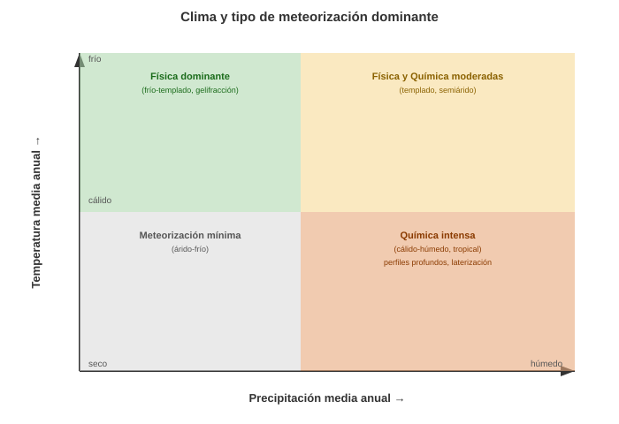
Fig. 49 Relación entre temperatura, precipitación y el tipo de meteorización dominante. Elaboración propia con base en Ollier [1984].#
Perfil de meteorización#
Perfil de Meteorización: Es la secuencia vertical completa de material alterado, desde la roca fresca ® en la base hasta el material más alterado en la superficie. Puede tener decenas de metros de espesor. En término general, y común al gran número de clasificaciones que existen, el perfil básico de meteorización lo conforman:
A- Horizontes móviles B- La roca meteorizada totalmente C- La roca meteorizada parcialmente D- La roca fresca
En su conjunto los horizontes A, B y C conforman el denominado regolito, donde el horizonte A se caracteriza por su color oscuro, debido a la presencia de abundante materia orgánica, y es el más intensamente afectado por los procesos de disolución, que arrastran sus iones hacia horizontes más profundos, por lo que se le conoce también como horizonte de lixiviación o de lavado [Caballero, 1998]. Entre los horizontes B y C existe una importante zona de transición en términos de comportamiento geotécnico. En los horizontes B predomina el suelo entendido como la roca totalmente meteorizada, donde el comportamiento está controlado por deformaciones de la masa de suelo, en tanto que en los horizontes C predomina el material rocoso, en el que el comportamiento está controlado por el movimiento a lo largo de las discontinuidades del macizo rocoso.
{kind=link}
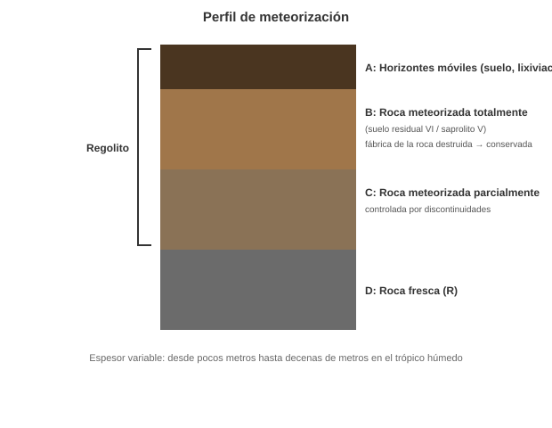
Fig. 50 Perfil de meteorización típico, desde la roca fresca (D) hasta los horizontes móviles superficiales (A). Elaboración propia.#
La parte superior del horizonte B se caracteriza por la extinción total de la fábrica y estructura de la roca parental, donde todo el material se ha convertido a suelo. Para las clasificaciones de la BS 5930 [BSI, 1981] y la GCO [GCO, 1988], este nivel corresponde exclusivamente al horizonte VI, denominado suelo residual, en el cual la roca está completamente meteorizada con un porcentaje menor al 30 % de roca. Voicu and Bardoux [2002] denominan este nivel, caracterizado por la presencia de zonas moteadas, ferricretes o latosol, como pedolito. Deere and Patton [1971], siguiendo la convención utilizada en la pedogénesis, definen este nivel como suelo residual clasificado horizonte IA, rico en materia orgánica y lixiviación, y horizonte IB, el cual está característicamente enriquecido en arcillas y acumulaciones de hierro, aluminio y sílice.
La parte inferior del horizonte B la conforma el denominado saprolito, definido como un material blando producto de la meteorización química de las rocas, y caracterizado por la formación de minerales secundarios, en el que la estructura y fábrica originales están preservadas debido al emplazamiento seudomórfico de los minerales originales sin alteración y transporte subsecuentes. La formación del saprolito es un proceso isovolumétrico, pero la mitad de la masa de la roca se pierde por lixiviación de sílice, hierro y bases [Voicu and Bardoux, 2002, Fookes, 1997]. Voicu and Bardoux [2002] dividen el saprolito en grueso (saprorock), como la zona de transición entre la roca y el saprolito caracterizado por la preservación de la fábrica de la roca y con un contenido menor al 20 % de productos de la alteración de minerales meteorizados, y saprolito fino (litomage), donde no hay minerales primarios pero se conserva la fábrica. Para la clasificación de Deere and Patton [1971], el saprolito corresponde al horizonte IC, con menos del 10 % de bloques de roca. Para Anon [1990], el saprolito se define como el manto meteorizado que se comporta en general como un suelo en términos geotécnicos y que presenta rasgos texturales y estructurales de la roca madre, y el cual, sumado con el horizonte VI, conforma el suelo residual tropical, donde las propiedades de la masa y del material son todavía las de un suelo; por debajo de este límite las características de la roca comienzan a dominar en la masa y el material. Para este autor, definir el suelo residual tropical como el grado VI exclusivamente es muy restrictivo para efectos geotécnicos, ya que gran parte del material descrito normalmente como suelo se encuentra por debajo de este grado en el perfil de meteorización típico.
En ambientes tropicales húmedos, por encima de los horizontes B se presentan suelos residuales alterados y altamente meteorizados, bajos en sílice, con una concentración suficiente de sesquióxidos de hierro y aluminio que ha sido cementada en algún grado, denominados lateritas [Blight, 1997]. La lateritización representa la etapa final del proceso de meteorización con la formación de sesquióxidos, los cuales corresponden a óxidos, oxidróxidos e hidróxidos (referidos colectivamente como óxidos) de hierro, aluminio y manganeso, que afectan fuertemente las propiedades físicas y químicas del suelo, la morfología y su clasificación [Shaw and West, 2006]. Shellmann [1981] define el término laterita como el producto de intensa meteorización subaérea, donde el contenido de Fe y Al es mayor y el contenido de sílice es más bajo comparado con la roca parental kaolinizada exclusivamente, y consiste predominantemente de minerales de goetita, hematita, hidróxidos de aluminio, minerales de kaolinita y cuarzo.
Suelo: Es la parte superior, biológicamente activa, del perfil de meteorización. Incluye los horizontes O, A y B, donde la materia orgánica se acumula y la estructura original de la roca ha sido destruida y reorganizada por procesos pedogenéticos.
La meteorización es el proceso destructivo de alteración de la roca madre. Es el primer paso y el insumo para la formación del suelo. La formación de suelos (pedogénesis) es un proceso constructivo y organizativo. Implica la meteorización, pero añade cuatro factores más (clima, organismos, relieve, tiempo) que actúan sobre el material parental (el producto de la meteorización) para crear horizontes estructurados y biológicamente activos.
En resumen: todo suelo es parte de un perfil de meteorización, pero no todo perfil de meteorización (especialmente las partes profundas como el saprolito) se considera “suelo” en el sentido pedológico.
Cuantificación de la Meteorización: Índices Geoquímicos#
En ingeniería y geología, no basta con describir el perfil; a menudo necesitamos cuantificar qué tan alterada está una roca mediante análisis químicos. El índice más utilizado es el Índice Químico de Alteración (CIA - Chemical Index of Alteration), propuesto por Nesbitt and Young [1982].
Donde los elementos se expresan en proporciones molares y \(CaO^*\) representa el calcio en la fracción de silicatos.
A continuación, puede utilizar esta celda para calcular el CIA de una muestra y determinar su grado de meteorización:
def calcular_cia(al2o3, cao, na2o, k2o):
# Cálculo del CIA
denominador = al2o3 + cao + na2o + k2o
cia = (al2o3 / denominador) * 100
return cia
# Valores de ejemplo (proporciones molares)
al = 15.2
ca = 1.2
na = 0.5
k = 0.8
resultado_cia = calcular_cia(al, ca, na, k)
print(f"El Índice Químico de Alteración (CIA) es: {resultado_cia:.2f}")
if resultado_cia < 50:
print("Grado: Roca Fresca")
elif 50 <= resultado_cia < 60:
print("Grado: Meteorización Débil")
elif 60 <= resultado_cia < 80:
print("Grado: Meteorización Moderada")
else:
print("Grado: Meteorización Intensa (Laterización/Suelos Residuales)")
El Índice Químico de Alteración (CIA) es: 85.88
Grado: Meteorización Intensa (Laterización/Suelos Residuales)
Tip
Un CIA alto indica que los cationes móviles (\(Ca, Na, K\)) han sido lixiviados, dejando un residuo enriquecido en Alúmina (arcillas). Como veremos en Geomorfología de Movimientos en Masa, esta transformación química reduce drásticamente las propiedades geomecánicas de la ladera.
Suelos In Situ y Suelos Transportados#
Suelos In Situ (Residuales): Son aquellos que se forman directamente sobre su roca madre. El perfil es coherente, pasando gradualmente de suelo a roca alterada y a roca fresca.
Suelos Transportados: Son aquellos formados sobre un material parental que fue transportado y depositado por un agente geológico (agua, viento, hielo, gravedad). Ejemplos: suelos aluviales (ríos), coluviales (gravedad), eólicos (loess).
{kind=link}
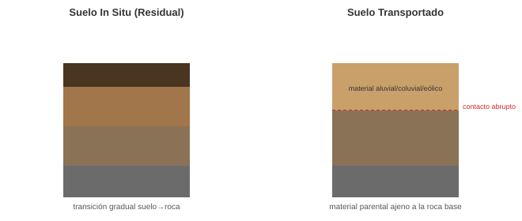
Fig. 51 Diferencia entre un suelo residual (transición gradual) y un suelo transportado (contacto abrupto con el material parental). Elaboración propia.#
Una catena (o toposecuencia) es una secuencia de tipos de suelo o perfiles de meteorización que cambian sistemáticamente a lo largo de una ladera. Refleja la influencia del relieve en la meteorización.
Cima: Suelos delgados, lixiviados (zona de pérdida neta).
Media Ladera: Perfiles más desarrollados, con posible transporte (coluvión).
Base de la Ladera: Suelos gruesos, de acumulación (zona de ganancia neta de agua y sedimentos), a menudo hidromórficos (saturados).
{kind=link}
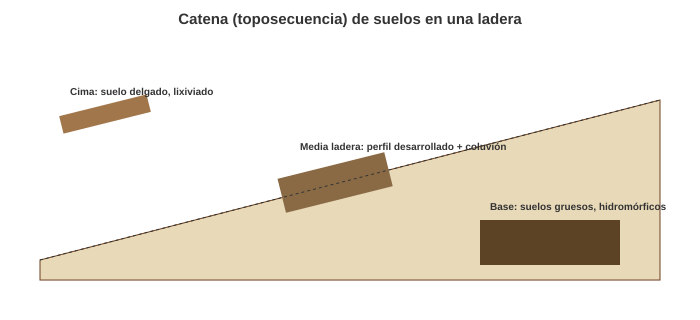
Fig. 52 Catena o toposecuencia de suelos a lo largo de una ladera. Elaboración propia.#
Métodos de descripción de perfiles de meteorización (Ingenieril)#
Para fines de ingeniería geotécnica, es crucial clasificar el grado de meteorización, ya que controla las propiedades mecánicas de la masa rocosa. La clasificación más utilizada [Little, 1969] divide el perfil en seis grados:
Grado VI (Suelo Residual): La fábrica de la roca ha sido completamente destruida y reemplazada por una estructura de suelo.
Grado V (Roca Completamente Meteorizada - Saprolito): Toda la roca está convertida en suelo, pero la fábrica original (textura y estructura) de la roca se conserva.
Grado IV (Roca Altamente Meteorizada): La mayor parte de la roca está alterada; la fábrica original se preserva, pero el material se puede deshacer a mano.
Grado III (Roca Moderadamente Meteorizada): Decoloración penetra la matriz; la roca intacta se debilita.
Grado II (Roca Ligeramente Meteorizada): Decoloración en discontinuidades; roca intacta aún fuerte.
Grado I (Roca Fresca - R): Sin signos visibles de meteorización.
{kind=link}
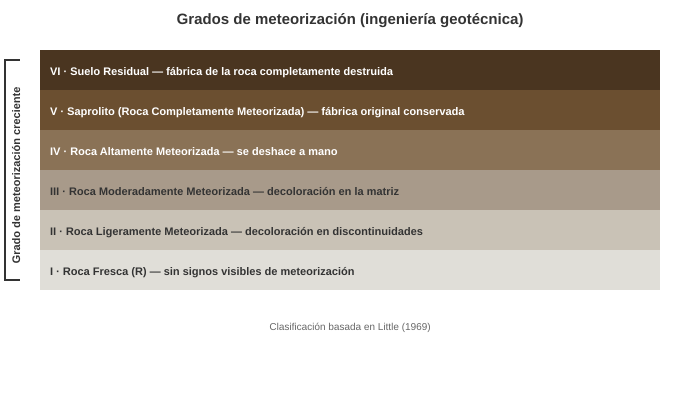
Fig. 53 Los seis grados de meteorización utilizados en ingeniería geotécnica. Elaboración propia con base en Little [1969].#
El suelo residual corresponde al horizonte VI, donde se ha perdido la estructura y textura de la roca parental. Mientras el suelo saprolítico corresponde al horizonte V, donde el material ya es un suelo geotécnicamente (se comporta como un suelo), pero visualmente aún retiene las estructuras de la roca original (vetas, foliación, etc.) y textura.
Tipos de Meteorización#
La meteorización se divide en tres tipos principales que actúan en conjunto:
Física (Mecánica): Desintegración sin cambio químico.
Química: Descomposición con cambio químico.
Biológica: Procesos físicos o químicos mediados por organismos (ej. raíces, ácidos orgánicos).
{kind=link}
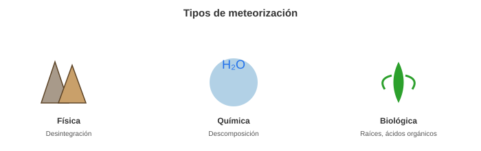
Fig. 54 Los tres tipos de meteorización: física, química y biológica. Elaboración propia.#
Meteorización Física#
Aumenta el área superficial, facilitando la meteorización química.
Gelifracción (Frost Wedging): El proceso más efectivo. El agua en las fisuras se congela, se expande (~9%) y actúa como una cuña, rompiendo la roca. Produce depósitos angulosos llamados gelifractos o derrubios de talud.
{kind=link}
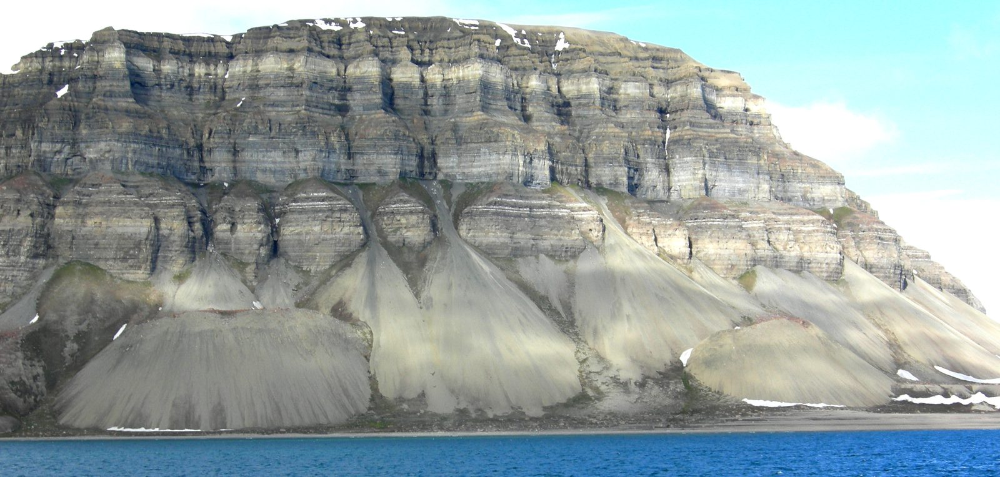
Fig. 55 Conos de talud (derrubios de gelifracción) al norte de Isfjorden, Svalbard (Noruega). Fotografía: Mark A. Wilson, Wikimedia Commons (dominio público).#
{kind=link}
Exfoliación (Descompresión): Ocurre en rocas masivas (ej. granitos) que se formaron a gran profundidad. Al ser exhumadas por la erosión, se expanden y se fracturan en grandes lajas (sheeting) paralelas a la superficie, formando domos de exfoliación.
{kind=link}
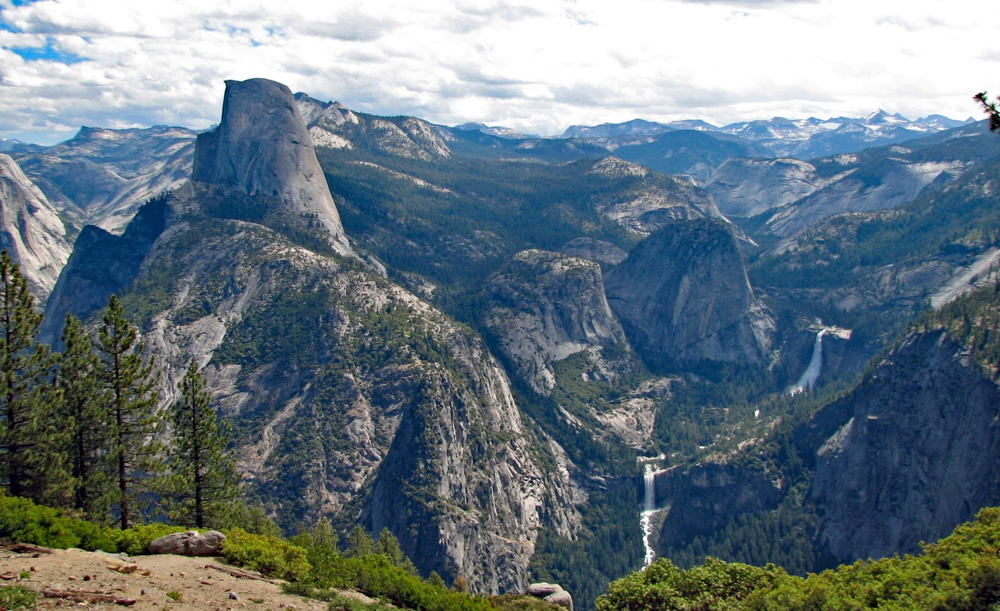
Fig. 56 Half Dome, en el Parque Nacional Yosemite (California, EE. UU.), un domo de exfoliación de granito con lajas paralelas a la superficie. Fotografía: James St. John, Wikimedia Commons (CC BY 2.0).#
_1.jpg){kind=link}
Haloclastia (Crecimiento de Sales): El crecimiento de cristales de sal (ej. halita, yeso) en los poros de la roca ejerce presión y la desintegra. Común en climas áridos y costeros. Un resultado característico es el tafoni o meteorización en panal de abejas.
{kind=link}
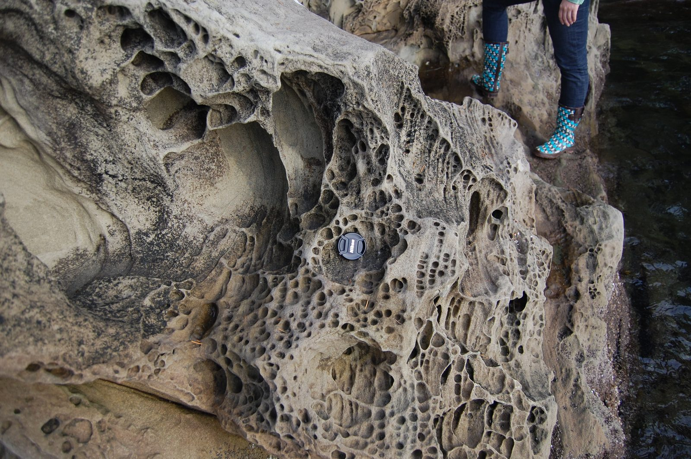
Fig. 57 Meteorización en panal de abejas (tafoni) por haloclastia, en el Parque Estatal Larrabee (Washington, EE. UU.). Fotografía: LizGeo310, Wikimedia Commons (CC BY 3.0).#
{kind=link}
Termoclastia: La expansión y contracción diferencial de los minerales en la roca debido a cambios bruscos de temperatura (ej. desiertos, incendios).
Meteorización Química#
Es la descomposición de los minerales. El agua es el agente esencial: (i) Es el solvente (para disolución). (ii) Es el medio de transporte (trae ácidos, O₂; retira productos). (iii) Es un reactivo directo (en la hidrólisis y la hidratación).
Durante la meteorización química, los iones se liberan de la red cristalina. Su movilidad (facilidad para ser lixiviados por el agua) varía desde Muy Móviles: Na⁺, K⁺, Mg²⁺, Ca²⁺ (se lavan fácilmente), Poco Móviles: Si⁴⁺ (relativamente inmóvil, aunque puede disolverse como H₄SiO₄), hasta Inmóviles (Residuales): Al³⁺, Fe³⁺, Ti⁴⁺. Esta movilidad diferencial es la razón por la cual los suelos tropicales muy meteorizados (Oxisoles) son esencialmente concentraciones de óxidos de hierro y aluminio (laterita, bauxita).
Los Índices de Meteorización Química cuantifican el grado de lixiviación de cationes móviles.
CIA (Chemical Index of Alteration): Mide la conversión de feldespatos a arcillas de aluminio [Nesbitt and Young, 1982].
CIA = [Al₂O₃ / (Al₂O₃ + CaO* + Na₂O + K₂O)] * 100(en moles; CaO* es solo el de los silicatos).Roca Fresca (Granito) ≈ 50-55
Suelo muy meteorizado (Kaolinita pura) ≈ 100
Diagrama A-CN-K: Un diagrama ternario (A = Al₂O₃; CN = CaO*+Na₂O; K = K₂O) que muestra la trayectoria de meteorización de una roca a medida que pierde cationes.
{kind=link}
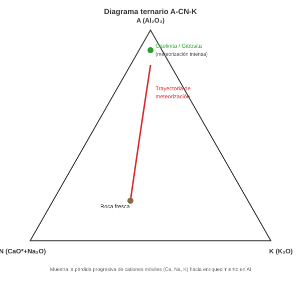
Fig. 58 Diagrama ternario A-CN-K, mostrando la trayectoria de meteorización desde la roca fresca hacia minerales residuales de aluminio. Elaboración propia con base en Nesbitt and Young [1982].#
Disolución y Ambiente Kárstico#
La disolución es la disociación de minerales en sus iones en un solvente (agua). Es el proceso dominante en rocas solubles (carbonatos, evaporitas).
Karst: Es un tipo de paisaje formado por la disolución de la roca subyacente.
Pseudokarst: Geoformas similares al karst, pero formadas por procesos no disolutivos (ej. tubos de lava, cuevas en hielo).
{kind=link}
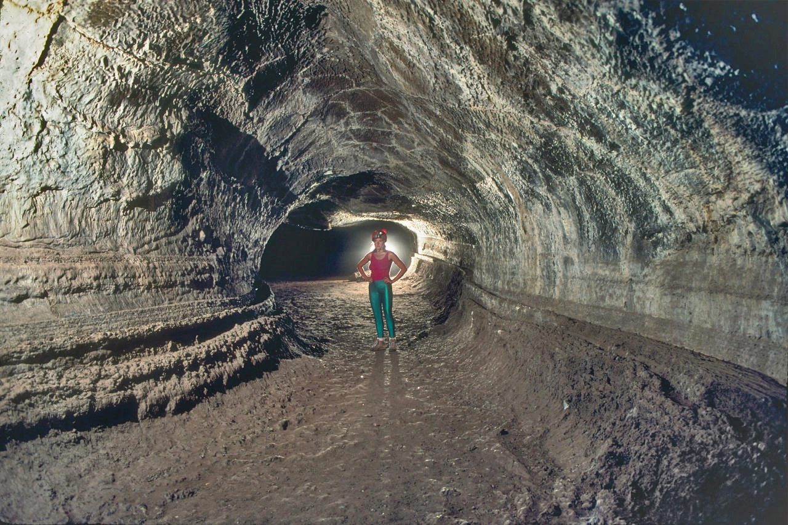
Fig. 59 Valentine Cave, un tubo de lava en el Monumento Nacional Lava Beds (California, EE. UU.), un ejemplo de pseudokarst formado sin disolución. Fotografía: Dave Bunnell, Wikimedia Commons (CC BY-SA 2.5).#
{kind=link}
Exokarst (Formas Superficiales)
Epikarst: La zona superficial de la roca carbonatada (los primeros metros), intensamente disuelta y muy porosa.
{kind=link}
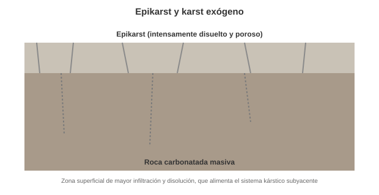
Fig. 60 El epikarst: zona superficial intensamente disuelta y porosa que alimenta al sistema kárstico subyacente. Elaboración propia.#
Pavimento (Limestone Pavement): Superficies planas de roca desnuda disectadas por fracturas disueltas.
Karren (Lapiaces): Microformas de disolución sobre la roca desnuda (surcos, acanaladuras, pináculos).
{kind=link}
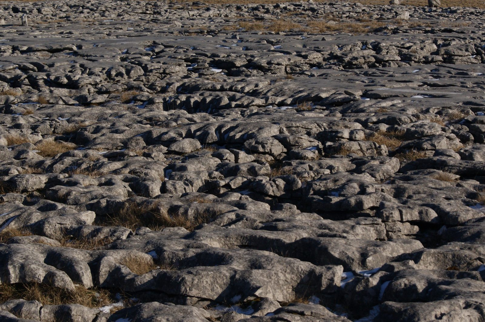
Fig. 61 Pavimento calcáreo (limestone pavement) con karren, en los Yorkshire Dales (Reino Unido). Fotografía: Childzy, Wikimedia Commons (CC BY-SA 3.0).#
{kind=link}
Dolina: Depresión cerrada circular. Puede ser de disolución (hundimiento lento) o de colapso (caída del techo de una cueva).
Uvala: Una depresión compuesta, grande e irregular, formada por la coalescencia (unión) de varias dolinas.
Poljé: Una depresión kárstica muy grande, de fondo plano (relleno de sedimentos) y bordes escarpados, a menudo controlada por la tectónica.
{kind=link}
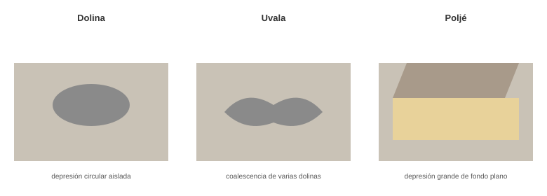
Fig. 62 Progresión de geoformas de colapso kárstico: dolina, uvala y poljé. Elaboración propia.#
Karst Tropical (Cónico y de Torres):
Kegelkarst (Karst Cónico): Paisaje de colinas cónicas regulares (Alemania).
Cockpits: Las depresiones en forma de estrella entre las colinas del Kegelkarst (Jamaica).
Turmkarst (Karst de Torres): Torres de caliza muy empinadas y aisladas (Mogotes), que se elevan desde una llanura aluvial (China, Cuba).
{kind=link}
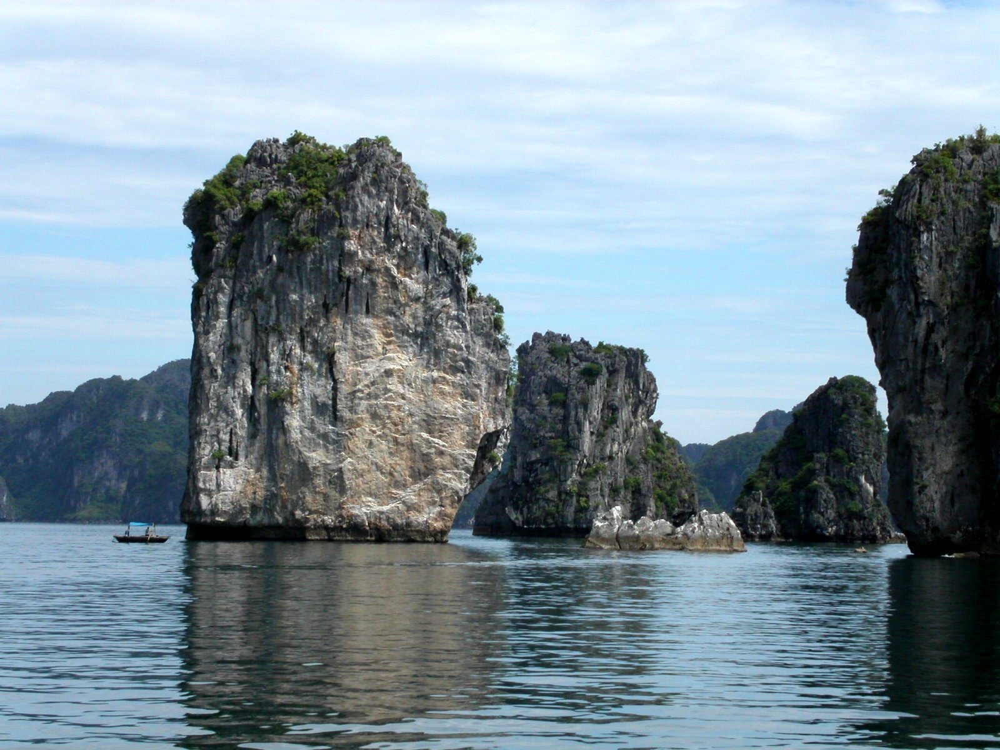
Fig. 63 Karst de torres (turmkarst) en la bahía de Ha Long (Vietnam), con mogotes calcáreos empinados emergiendo de la llanura. Fotografía: Thomas Hirsch, Wikimedia Commons (CC BY-SA 3.0).#
{kind=link}
Endokarst (Formas Subterráneas)
Se refiere a las cuevas y sus depósitos (espeleotemas), formados por la precipitación de carbonato de calcio (calcita, aragonito) a partir del agua que gotea.
Estalactitas: Crecen desde el techo (hacia abajo).
Estalagmitas: Crecen desde el suelo (hacia arriba).
Columnas: Unión de una estalactita y una estalagmita.
{kind=link}
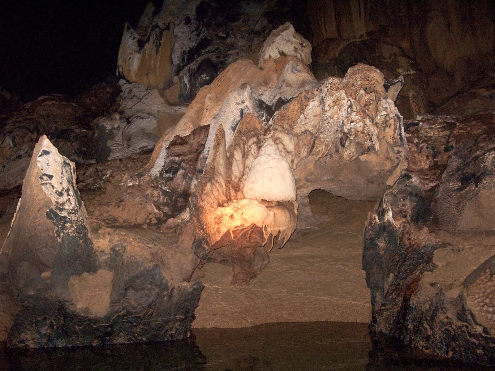
Fig. 64 Estalactitas y estalagmitas en la Cueva del Río Subterráneo de Puerto Princesa (Palawan, Filipinas). Fotografía: Vyacheslav Argenberg, Wikimedia Commons (CC BY 4.0).#
{kind=link}
Gour (Represas): Pequeñas represas de calcita que escalonan el suelo de una cueva.
{kind=link}
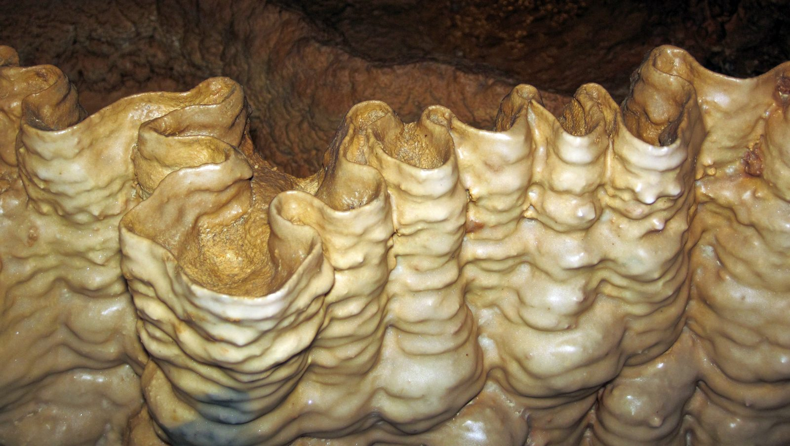
Fig. 65 Gours (represas de calcita o rimstone) en Crystal Onyx Cave, Kentucky (EE. UU.). Fotografía: James St. John, Wikimedia Commons (CC BY 2.0).#
_11.jpg){kind=link}
Banderas (Draperies): Depósitos en forma de cortina formados por goteo lateral en una pared inclinada.
Helictitas: Formas excéntricas que crecen en cualquier dirección, desafiando la gravedad (controladas por capilaridad).
{kind=link}
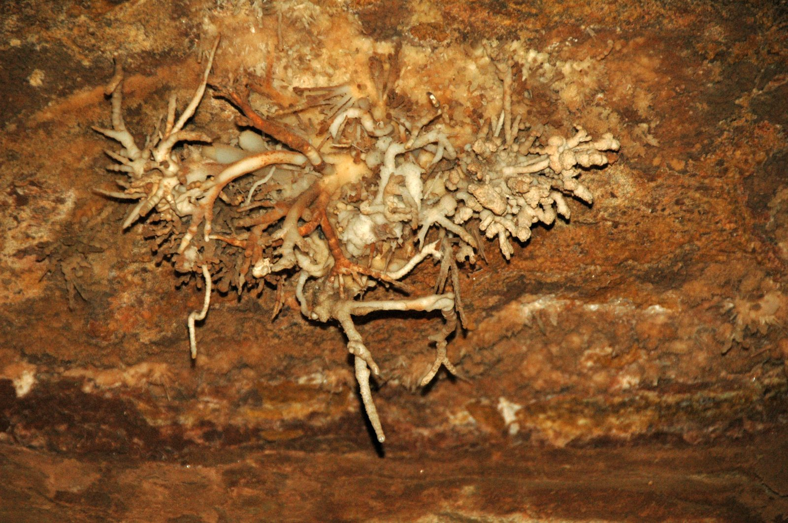
Fig. 66 Helictitas en Cave of the Winds, Manitou Springs (Colorado, EE. UU.), creciendo en direcciones controladas por capilaridad. Fotografía: James St. John, Wikimedia Commons (CC BY 2.0).#
_(8317600624).jpg){kind=link}
Moonmilk: Precipitados blandos, blancos y pastosos, a menudo mediados por bacterias.
Frostwork: Agregados delicados de cristales de aragonito en forma de aguja.
Karst Hipogénico: Un tipo especial de karst donde las cuevas son disueltas por fluidos profundos, calientes y a menudo ácidos (ej. H₂S derivado de hidrocarburos) que ascienden desde abajo, en lugar de ser formadas por agua meteórica (lluvia) que desciende desde la superficie.
{kind=link}
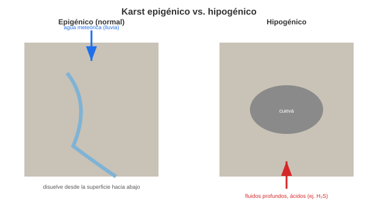
Fig. 67 Diferencia entre el karst epigénico (agua meteórica descendente) y el karst hipogénico (fluidos ascendentes desde profundidad). Elaboración propia.#
Hidratación#
La absorción de moléculas de agua en la estructura cristalina de un mineral, sin que haya una reacción química mayor. El principal efecto es un aumento de volumen, que genera estrés físico. No hay una participación química activa de H⁺ ni de OH⁻ como reactivos que rompen enlaces. El agua se incorpora en la estructura del mineral como moléculas de agua completas (H₂O). Simplemente se acomoda entre los espacios de la estructura cristalina o se adhiere a las superficies.
Ejemplo: Anhidrita (CaSO₄) + Agua → Yeso (CaSO₄·2H₂O)
Hidrólisis#
Es la reacción de meteorización más importante para los silicatos (el 90% de la corteza). Es una reacción química compleja donde un mineral reacciona con el agua, usualmente acidificada por el CO₂ atmosférico (ácido carbónico, H₂CO₃). El agua rompe los enlaces del mineral, liberando cationes y sílice, y formando minerales de arcilla como producto residual. H⁺ rompe enlaces catión-metal-oxígeno (por ejemplo, rompe enlaces Si–O o Al–O). OH⁻ ataca enlaces metálicos, formando hidróxidos o liberando cationes.
Reacción Clave (Simplificada): Feldespato + Ácido Carbónico + Agua → Caolinita (Arcilla) + Cationes disueltos (K⁺, Na⁺) + Sílice disuelta
{kind=link}
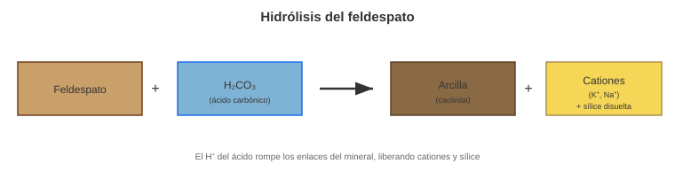
Fig. 68 Reacción de hidrólisis del feldespato, formando arcilla, cationes y sílice disuelta. Elaboración propia.#
Oxidación-Reducción (Redox)#
La pérdida (oxidación) o ganancia (reducción) de electrones. Es crucial para elementos con múltiples estados de valencia, especialmente el Hierro (Fe).
Reducción (Ambientes anóxicos, saturados): El Hierro está como Fe²⁺ (Ferroso). Es soluble y móvil en el agua. Produce colores grises o verdosos en el suelo.
Oxidación (Ambientes aireados): El Hierro está como Fe³⁺ (Férrico). Es insoluble y precipita como óxidos e hidróxidos (Hematita, Goethita). Produce los característicos colores rojos, ocres y amarillos.
{kind=link}
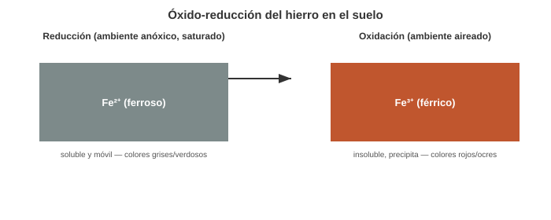
Fig. 69 Comportamiento del hierro en condiciones de reducción (Fe²⁺, móvil) y oxidación (Fe³⁺, insoluble). Elaboración propia.#
Oxisoles (Suelos Lateríticos): Suelos tropicales profundos, intensamente meteorizados, lixiviados de cationes y sílice, y enriquecidos en óxidos de Fe y Al (residuales).
Ferricretes: Un tipo de duricrust formado por la cementación masiva de sedimentos por óxidos de hierro.
Duricrust (Costras): Horizontes superficiales o subsuperficiales endurecidos y cementados.
La formación del horizonte laterítico no es solo química; requiere de una dinámica física de fluctuación del nivel freático:
Fluctuación del Agua Subterránea: Durante la época de lluvias, el hierro se reduce y se vuelve móvil. En la época seca, al descender el nivel freático, el hierro se oxida y precipita en los poros del suelo.
Cementación: Con el tiempo, este ciclo de oxidación-precipitación rellena los espacios vacíos del suelo con óxidos de hierro, “soldando” los granos de suelo.
Induración (Plintita a Duricostra): El material comienza como plintita (una arcilla rica en hierro que se puede cortar con pala). Si este horizonte se expone a la superficie (por erosión del solum superior) y se deseca irreversiblemente, se convierte en una duricostra o coraza laterítica (ferricreta), que es tan dura como una roca.
Se forman por dos vías principales:
Por Acumulación Relativa (Lixiviación): Típico de climas húmedos. Se lava todo el material soluble (sílice, cationes), dejando una concentración residual de los óxidos más insolubles.
Ferricrete (rica en Fe)
Alcrete (rica en Al, Bauxita)
Por Acumulación Absoluta (Precipitación): Típico de climas áridos/semiáridos. El agua subterránea asciende por capilaridad, se evapora y precipita los minerales que lleva disueltos, cementando el suelo.
Calcrete (Carbonato de calcio)
Silcrete (Sílice)
{kind=link}
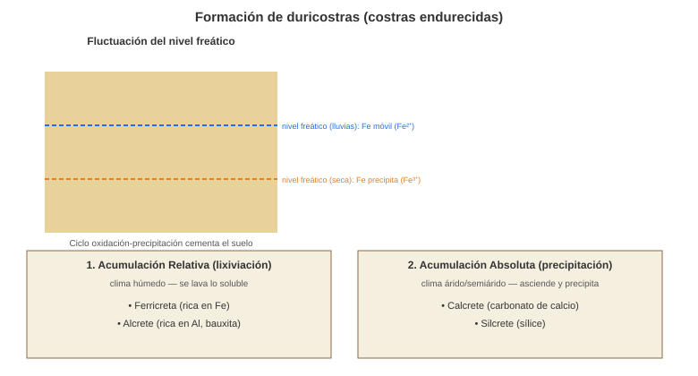
Fig. 70 Formación de duricostras por fluctuación del nivel freático, y sus dos vías principales: acumulación relativa y acumulación absoluta. Elaboración propia.#
Minerales de arcilla#
Los minerales primarios (como los feldespatos) se transforman en minerales secundarios (arcillas) durante la meteorización. Los minerales de arcilla (filosilicatos) están conformados por láminas tetraédricas. La unidad básica, el tetraedro (\(SiO_4^{4-}\)), donde un ion de silicio (\(Si^{4+}\)) está rodeado por cuatro iones de oxígeno (\(O^{2-}\)). Sin embargo, el silicio puede ser reemplazado por aluminio (\(Al^{3+}\)) para formar tetraedros de \(AlO_4^{5-}\). Los tetraedros se unen entre sí compartiendo tres de sus cuatro vértices, es decir, tres de los cuatro oxígenos de su base. El cuarto oxígeno, llamado oxígeno apical, apunta en una dirección específica, lo que le da a la lámina una polaridad.
Las láminas tetraédricas y octaédricas se combinan para formar las capas de los minerales de arcilla, que son las unidades fundamentales de su estructura cristalina.
Capas 1:1: En estas arcillas, la capa de hidroxilo (\(OH⁻\)) de la lámina octaédrica se une directamente a la capa de oxígeno de la lámina tetraédrica de la capa superior a través de fuertes enlaces de hidrógeno. La lámina octaédrica está compuesta por cationes (principalmente aluminio o magnesio) rodeados por seis aniones (oxígeno o hidroxilo) en una configuración octaédrica. Los minerales de arcilla con este tipo de estructura, como la caolinita, se denominan filosilicatos 1:1. Esta unión es tan fuerte que no permite que las moléculas de agua entren entre las capas. Por lo tanto, las arcillas 1:1 como la caolinita son no expansivas y no se hinchan.
Capas 2:1: En este caso, una lámina octaédrica está “sándwich” entre dos láminas tetraédricas. Estos minerales, como la pirofilita o el talco, se conocen como filosilicatos 2:1. En estas arcillas, como la esmectita, las láminas tetraédricas de la parte superior e inferior están unidas por enlaces débiles (fuerzas de Van der Waals). Esto permite que el agua, con su naturaleza polar, se infiltre entre las capas. El agua hidrata los cationes que equilibran la carga, como el sodio (\(Na^{+}\)) y el calcio (\(Ca^{2+}\)), lo que fuerza la separación de las capas y provoca un hinchamiento masivo. A medida que el suelo se seca, el agua se elimina y las capas se contraen. Este comportamiento de “hinchamiento-contracción” causa grandes problemas en la ingeniería geotécnica.
{kind=link}
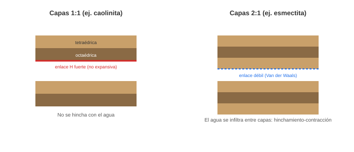
Fig. 71 Estructura de los minerales de arcilla 1:1 (no expansivos) y 2:1 (expansivos). Elaboración propia.#
Taller de Autoevaluación#
Física vs. Química: ¿Bajo qué condiciones climáticas (P, T) predomina la meteorización física por gelifracción y bajo cuáles la meteorización química por hidrólisis?
Ciclo del Carbono: Explique cómo la meteorización de silicatos actúa como un termostato natural del planeta a escalas de tiempo geológicas.
Perfil de Meteorización: Defina operacionalmente qué es un saprolito. ¿En qué se diferencia visualmente de la roca fresca y del suelo residual (VI)?
Ingeniería Geotécnica: ¿Por qué las arcillas con estructura 2:1 (como la montmorillonita) son más problemáticas para la construcción de obras civiles que las arcillas 1:1 (como la caolinita)?
Movilidad de Iones: En un perfil de meteorización desarrollado en un ambiente tropical húmedo (ej. Chocó, Colombia), ¿qué elementos químicos esperaría encontrar concentrados en la superficie y cuáles habrán sido lixiviados?